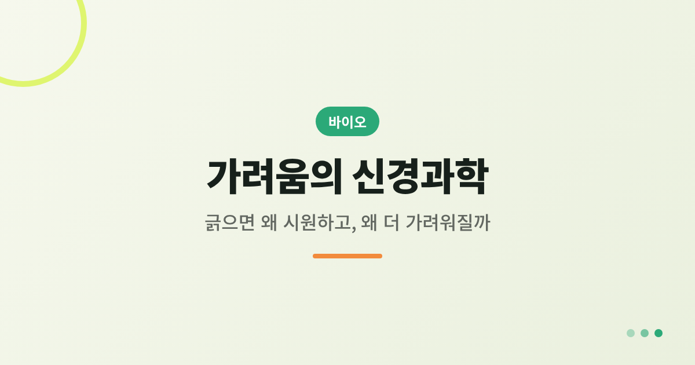
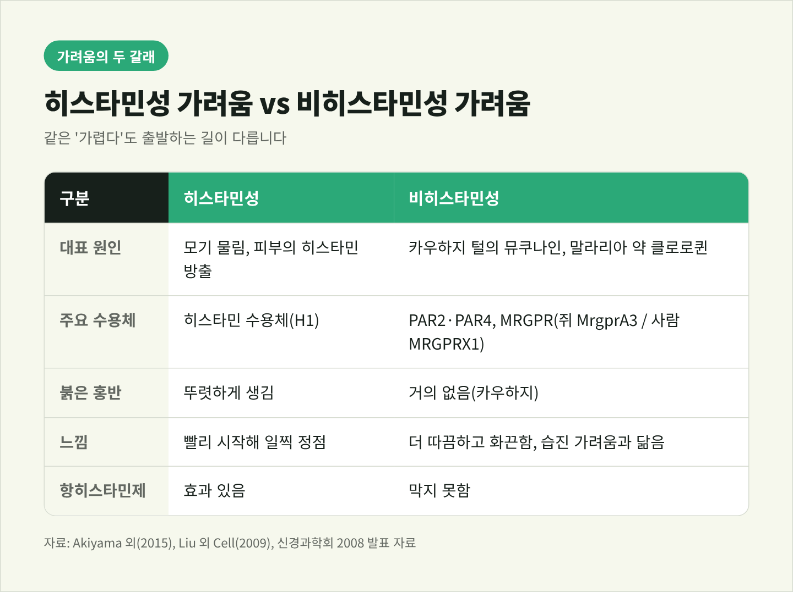
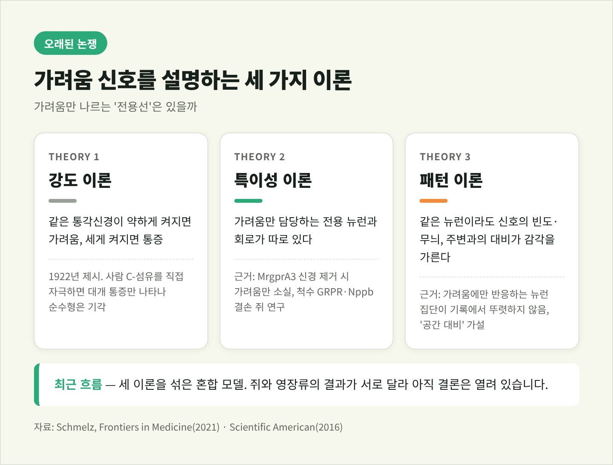
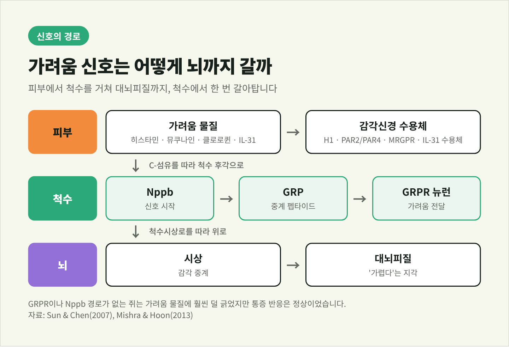
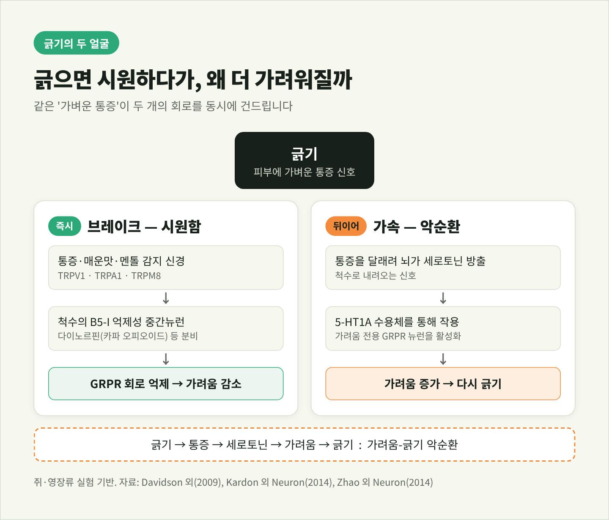
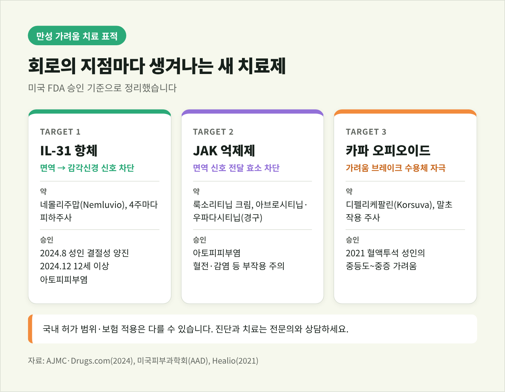

가려움의 신경과학 — 긁으면 왜 시원하고, 왜 더 가려워질까

이번 글에서는 가려움의 신경과학을 정리해 보겠습니다. 가려움은 오랫동안 '약한 통증'쯤으로 여겨졌습니다. 지금은 피부의 수용체부터 척수의 전용 회로, 뇌의 반응까지 따로 연구되는 독립된 감각입니다.
먼저 요점만 추리면 이렇습니다.
- 가려움은 히스타민으로 생기는 것과 히스타민 없이 생기는 것, 두 갈래가 있습니다. 만성 가려움에 항히스타민제가 잘 듣지 않는 이유가 여기에 있습니다.
- 척수에는 가려움 신호를 넘겨주는 GRP–GRPR 회로가 있습니다. 긁기가 만든 가벼운 통증은 억제성 중간뉴런을 깨워 이 신호를 누릅니다.
- 그런데 그 통증을 달래려 뇌가 내보낸 세로토닌이 가려움 회로를 다시 자극합니다. 긁을수록 더 가려운 악순환의 정체입니다.
■ 한 번쯤은 겪는 감각, 그러나 오래가면 질환입니다
가려움은 흔합니다. 문제는 오래 갈 때입니다.
독일 주민 2,540명을 조사한 인구 기반 연구가 있습니다. 6주 넘게 이어지는 만성 가려움을 지금 겪고 있는 사람이 13.5%였습니다. 지난 1년으로 넓히면 16.4%, 평생으로 넓히면 22.0%였습니다.
다섯 명 중 한 명꼴입니다.
만성 가려움은 잠을 깨우고, 피부를 상하게 하고, 기분까지 무너뜨립니다. 그런데도 오래도록 대표 치료제는 항히스타민제였습니다. 연구자들은 만성 가려움 상당수에서 항히스타민제가 실패한다고 지적합니다. 효과를 봤다는 환자도 실은 약의 졸음 효과 덕일 수 있다는 분석까지 나옵니다.
왜 듣지 않을까요. 답은 가려움에 길이 하나가 아니라는 데 있습니다.
■ 히스타민성 가려움과 비히스타민성 가려움
모기에 물렸을 때를 떠올려 보시면 됩니다.
피부 세포가 히스타민을 내보내고, 감각신경이 이를 받아 척수로 전합니다. 신호는 척수시상로를 타고 시상을 거쳐 대뇌피질에 닿습니다. 붉게 부어오르는 홍반이 함께 나타나는 것이 특징입니다. 사람 피부에서는 히스타민에 반응하되 누르는 자극에는 둔한 C-섬유가 1997년에 확인됐습니다.
다른 길도 있습니다. 대표적인 실험 도구가 카우하지(cowhage)라는 열대 콩과 식물입니다.
카우하지 꼬투리의 잔털은 장난용 '가려움 가루'의 원료로 쓰였습니다. 털 속에는 뮤쿠나인(mucunain)이라는 단백질 분해효소가 들어 있습니다. 이 효소는 신경세포 표면의 PAR2·PAR4라는 수용체를 건드려 가려움을 일으킵니다.
카우하지 가려움은 히스타민과 성질이 다릅니다.
- 붉은 홍반이 거의 생기지 않습니다.
- 항히스타민제를 미리 써도 막히지 않습니다.
- 느낌이 더 따끔하고 화끈합니다. 습진 환자들이 묘사하는 가려움과 닮았다는 평가가 있습니다.
2008년 학회에서 발표된 지원자 실험에서도 차이가 뚜렷했습니다. 히스타민은 빨리 시작해 일찍 정점을 찍었고, 카우하지는 더 날카롭게 쏘는 가려움을 남겼습니다. 항히스타민 크림은 카우하지 가려움을 막지 못했습니다.
또 하나의 열쇠가 MRGPR이라는 수용체 가족입니다. 2001년 처음 보고된 이 수용체들은 말초 감각신경에만 있습니다. 2009년 연구에서 Mrgpr 유전자 묶음을 없앤 쥐는 말라리아 약 클로로퀸에 덜 긁었습니다. 히스타민에는 여전히 긁었습니다. 클로로퀸은 쥐의 MrgprA3, 사람의 MRGPRX1을 직접 활성화합니다. 2013년에는 MrgprA3를 가진 신경을 없애자 가려움만 사라지고 통증 감각은 남았다는 결과가 나왔습니다.

■ 가려움 전용선은 있는가 — 특이성 이론과 패턴 이론
가려움이 별도의 감각이라면, 가려움만 나르는 신경이 따로 있어야 할까요. 이 질문을 두고 오랜 논쟁이 이어졌습니다.
예전에는 강도 이론이 우세했습니다. 1922년에 제시된 이 생각은 같은 통각신경이 약하게 활동하면 가려움, 세게 활동하면 통증이 된다고 봤습니다. 지금은 순수한 형태로는 받아들여지지 않습니다. 사람 신경에 전극을 넣어 C-섬유를 자극하면 대개 통증이 나타나고, 가려움은 아주 드물게만 나타났기 때문입니다.
이후 두 입장이 맞섰습니다.
특이성(전용선) 이론은 가려움 전용 뉴런이 있다고 봅니다. MrgprA3 신경을 없애면 가려움만 사라진다는 실험, 뒤에서 소개할 척수의 GRPR·Nppb 연구가 이를 뒷받침합니다.
패턴 이론은 같은 뉴런이라도 어떤 무늬로 신호를 보내느냐가 감각을 가른다고 봅니다. 설치류와 원숭이의 전기생리 기록에서는 가려움에만 반응하는 뉴런 집단이 뚜렷이 잡히지 않았습니다. 히스타민 자극은 캡사이신 자극보다 낮은 빈도, 긴 간격으로 신호를 냅니다. 한 지점의 소수 신경만 강하게 켜지고 주변은 조용할 때 가려움이 생긴다는 '공간 대비' 가설도 이 계열입니다.
어느 쪽도 완승은 아닙니다. 2003년에는 히스타민에 반응하는 뉴런 일부가 통증 물질인 캡사이신에도 반응한다는 결과가 나와 전용선 이론을 복잡하게 만들었습니다. 쥐에서는 척수 뉴런 다수가 두 가지 가려움 물질에 함께 반응했지만, 영장류에서는 히스타민과 카우하지가 서로 다른 뉴런 집단을 켰습니다. 종에 따라 그림이 다른 셈입니다.
그래서 최근 리뷰는 세 이론을 섞은 혼합 모델을 제안합니다. 작은 신경섬유가 손상된 환자가 호소하는 '화끈거리는 가려움'처럼, 가려움과 통증은 실제로 뒤섞여 나타나기도 합니다.

■ 척수의 가려움 중계소, Nppb에서 GRP, GRPR로
피부에서 출발한 가려움 신호는 척수 뒤쪽(후각)에서 한 번 갈아탑니다.
2007년 워싱턴대 연구팀은 가스트린 분비 펩타이드 수용체(GRPR)를 찾아냈습니다. 중추신경계에서 가려움과 연결된 첫 유전자였습니다. GRPR이 없는 쥐는 가려움 물질을 줘도 훨씬 덜 긁었습니다. 반면 통증 반응은 정상이었습니다. 다만 긁기가 완전히 사라지지는 않아, 다른 경로도 있다는 점을 남겼습니다.
2013년 미국 국립보건원(NIH) 팀은 그 앞 단계를 밝혔습니다. 감각신경이 척수에서 Nppb라는 작은 분자를 내보내면, 이를 받은 뉴런이 GRP를 방출하고, GRP가 GRPR 뉴런을 깨워 신호를 뇌로 올려보냅니다. Nppb나 그 수용체 뉴런이 없는 쥐는 여러 가려움 물질에 긁지 않았습니다. 온도·통증·촉각은 그대로였습니다.
연구 책임자는 이렇게 말했습니다. 가려움은 약한 통증이 아니라 별개의 감각이라고.
흥미로운 점은 이 회로가 '꾸준한' 신호를 좋아한다는 것입니다. GRPR 뉴런을 짧게 한 번 자극하는 것만으로는 신호가 잘 넘어가지 않습니다. 반복되고 지속되는 입력이 쌓여야 가려움으로 번집니다.

■ 긁으면 왜 시원할까 — 통증이 가려움을 누르는 원리
긁는 행위는 피부에 가벼운 통증을 만듭니다. 이 통증이 가려움을 끄는 스위치입니다.
2009년 미네소타대 연구가 이를 신경 수준에서 보여줬습니다. 영장류의 피부에 히스타민을 바르고, 척수에서 뇌로 신호를 올리는 뉴런의 반응을 기록했습니다. 가려운 부위를 긁자 이 뉴런의 활동이 눌렸습니다. 가렵지 않을 때 긁으면 그런 억제가 없었습니다. 억제는 척수에서 일어났고, 통증 신호 자체는 막지 않았습니다.
그 억제를 맡는 세포 후보가 B5-I 뉴런입니다.
2010년 발표된 연구는 Bhlhb5라는 유전자가 없는 쥐를 관찰했습니다. 이 쥐는 척수의 억제성 중간뉴런 일부(B5-I)를 잃었고, 아무 자극 없이 스스로 긁어 피부에 상처까지 생겼습니다. 통증 반응은 대체로 정상이었습니다. 가려움의 브레이크가 고장 난 셈입니다.
2014년 후속 연구는 브레이크의 작동 방식을 더 자세히 그렸습니다.
- B5-I 뉴런은 척수 후각 표층에서 다이노르핀의 주요 공급원입니다. 다이노르핀은 카파 오피오이드 수용체에 붙는 몸 안의 진통 물질입니다.
- 카파 수용체를 자극하는 약은 가려움을 줄였고, 통증 반응에는 거의 영향을 주지 않았습니다. 반대로 카파 수용체를 막자 가려움이 늘었습니다.
- B5-I 뉴런은 캡사이신(매운맛), 머스터드 오일(톡 쏘는 맛), 멘톨(시원함)을 감지하는 신경으로부터 직접 신호를 받습니다.
- 멘톨을 바르면 정상 쥐는 덜 긁었지만, B5-I가 없는 쥐에서는 효과가 없었습니다.
가려울 때 멘톨처럼 시원한 자극이 도움이 되는 이유를 짐작하게 하는 결과입니다. 다만 다이노르핀이 없는 쥐는 가려움이 정상이었습니다. 연구진은 다이노르핀 말고도 빠른 억제성 신경전달물질이 함께 작용한다고 봤습니다. 아직 그림이 완성된 것은 아닙니다.
■ 왜 긁을수록 더 가려울까 — 세로토닌의 역습
여기서 역설이 생깁니다.
2014년 워싱턴대 연구팀은 긁기가 남기는 뒤끝을 추적했습니다. 긁어서 생긴 통증을 줄이려고 뇌는 세로토닌을 척수로 내려보냅니다. 세로토닌은 통증을 누르는 데서 멈추지 않았습니다. 5-HT1A라는 수용체를 통해 가려움 전용 GRPR 뉴런까지 활성화했습니다.
통증을 끄려던 신호가 가려움을 켠 것입니다.
실험 결과도 이를 뒷받침했습니다. 세로토닌을 만들지 못하는 쥐는 가려움 물질을 맞아도 덜 긁었고, 세로토닌을 보충하자 다시 원래대로 긁었습니다. 5-HT1A 수용체를 막는 물질을 준 쥐도 훨씬 덜 긁었습니다.
연구진은 세로토닌을 통째로 막는 방법은 현실적이지 않다고 봤습니다. 세로토닌은 기분·수면 등 몸 곳곳에 관여하기 때문입니다. 대신 세로토닌과 GRPR 뉴런 사이의 연결만 겨냥하는 방향을 제안했습니다.
뇌의 보상도 악순환에 힘을 보탭니다. 2013년 뇌 영상 연구에서는 긁기가 뇌의 보상계를 활성화했고, 그 반응은 만성 가려움 환자에게서 더 강했다고 합니다. 긁는 순간의 쾌감이 다음 긁기를 부르는 구조입니다.

■ 만성 가려움과 새 치료 표적 — IL-31, JAK, 카파 오피오이드
아토피피부염의 가려움은 면역과 신경이 맞물린 결과입니다.
2014년 연구에 따르면 면역세포인 Th2 세포가 IL-31이라는 신호물질을 주로 만듭니다. IL-31을 피부에 주사하면 강한 가려움이 생겼습니다. IL-31의 수용체는 사람과 쥐의 감각신경절 뉴런, 그중에서도 통증·열 감지 통로인 TRPV1을 함께 가진 뉴런에 주로 있었습니다. 면역세포가 감각신경에 직접 '가려우라'는 신호를 보내는 연결 고리인 셈입니다.
이 연결을 끊는 약이 실제로 나왔습니다. 미국 FDA 승인 기준으로 정리하면 이렇습니다.
- 네몰리주맙(Nemluvio) — IL-31 신호를 막는 항체 주사로, IL-31을 억제하는 첫 승인 항체입니다. 2024년 8월 성인 결절성 양진, 같은 해 12월 12세 이상 중등도~중증 아토피피부염(국소 치료제와 병용)에 승인됐습니다. 4주마다 피하주사합니다. 결절성 양진 임상(OLYMPIA 1·2)에서 16주 뒤 가려움 점수가 4점 이상 줄어든 환자가 56%와 49%로, 위약군 16%보다 높았습니다.
- JAK 억제제 — 면역 신호 전달 효소를 막는 약입니다. 미국피부과학회에 따르면 아토피피부염에는 바르는 룩소리티닙 크림(12세 이상), 먹는 아브로시티닙(성인), 우파다시티닙(12세 이상)이 승인돼 있습니다. 일부 환자는 하루 이틀 만에 가려움이 줄었다고 보고됐습니다. 혈전·폐렴·결핵 같은 심각한 부작용 가능성도 함께 안내됩니다.
- 카파 오피오이드 작용제 — 디펠리케팔린(Korsuva)은 말초에서 작용하는 카파 오피오이드 수용체 작용제 주사입니다. 2021년 혈액투석 중인 성인의 중등도~중증 가려움 치료제로 승인됐습니다. 척수의 다이노르핀이 가려움을 누른다는 기초 연구와 같은 수용체를 겨냥한다는 점에서 눈여겨볼 만합니다.
국내 허가 범위와 보험 적용은 미국과 다를 수 있습니다. 이 글은 의학적 진단이나 처방을 대신하지 않습니다. 가려움이 6주 이상 이어지거나 잠을 방해할 정도라면 피부과 전문의와 상담하시길 권합니다.

■ 남이 긁으면 나도 가려운 이유
강의 중에 누군가 머리를 긁적이면, 괜히 내 머리도 가려워집니다.
2017년 워싱턴대 연구팀은 쥐에게 다른 쥐가 긁는 영상을 보여줬습니다. 시력이 좋지 않은 동물인데도 몇 초 만에 따라 긁었습니다. 이때 뇌의 시교차상핵이 강하게 활성화되며 GRP를 내보냈습니다. 척수에서 가려움을 중계하던 바로 그 물질입니다. 시교차상핵의 GRP나 그 수용체를 막자, 쥐는 남이 긁는 모습을 봐도 따라 긁지 않았습니다. 가려움 물질에는 정상으로 반응했습니다.
연구 책임자는 이것이 공감이 아니라 타고난 배선이라고 설명했습니다. 사람에 대해서는 가려운 식물과 벌레 사이에서 살던 조상이 미리 몸을 살피던 습관의 흔적일 수 있다는 해석이 있습니다. 아직 가설 단계입니다.
정리하면 이렇습니다.
가려움은 통증의 동생이 아니라 독자적인 감각 체계입니다. 피부의 서로 다른 수용체가 신호를 받고, 척수의 Nppb–GRP–GRPR 회로가 이를 넘기며, B5-I 뉴런이 브레이크를 겁니다. 긁기는 그 브레이크를 잠시 밟아 주지만, 뒤따르는 세로토닌이 가속 페달을 다시 밟습니다.
긁는 손이 주는 위안은 진짜이지만, 오래 가지는 않습니다.
예전에는 가려움을 다스리는 대표 수단이 항히스타민제였습니다. 지금은 IL-31, JAK, 카파 수용체처럼 회로의 지점마다 약이 생기고 있습니다. 다만 대부분의 회로 연구는 쥐에서 이뤄졌고, 사람에게 그대로 들어맞는지는 더 확인이 필요합니다.
다음에 손이 저절로 피부로 향한다면, 차가운 수건을 먼저 대 보시면 어떨까요. 척수의 브레이크를 긁지 않고 건드려 보는 방법일 수 있기 때문입니다.
참고자료
- Matterne U et al. Prevalence, correlates and characteristics of chronic pruritus. Acta Dermato-Venereologica (2011) - https://doi.org/10.2340/00015555-1159
- Sutherland S. The Maddening Sensation of Itch. Scientific American (2016) - https://www.scientificamerican.com/article/why-we-itch/
- Schmelz M. How Do Neurons Signal Itch? Frontiers in Medicine (2021) - https://www.frontiersin.org/journals/medicine/articles/10.3389/fmed.2021.643006/full
- Washington University. Scratch no more: Gene for itch sensation discovered (2007) - https://source.washu.edu/2007/07/scratch-no-more-gene-for-itch-sensation-discovered/
- NIH. Itch-specific molecule Nppb news release (2013) - https://www.nih.gov/node/13036
- Liu Q et al. Mrgprs Are Itch Receptors Mediating Chloroquine-Induced Pruritus. Cell (2009) - https://authors.library.caltech.edu/17207
- Akiyama T, Lerner EA, Carstens E. Protease-Activated Receptors and Itch (2015) - https://escholarship.org/content/qt4nt4f4vv/qt4nt4f4vv.pdf
- Reddy VB et al. Cathepsin S evokes itch via activation of Mrgprs. Nature Communications (2015) - https://www.nature.com/articles/ncomms8864
- Society for Neuroscience. Neuroscience 2008 press release on itch - https://www.sfn.org/-/media/SfN/Documents/Press-Releases/2008/05ITCH.pdf
- ScienceDaily. Relief of itch by scratching (Davidson et al., Nature Neuroscience 2009) - https://www.sciencedaily.com/releases/2009/04/090428112615.htm
- Kardon AP et al. Dynorphin Acts as a Neuromodulator to Inhibit Itch in the Dorsal Horn of the Spinal Cord. Neuron (2014) - https://pmc.ncbi.nlm.nih.gov/articles/PMC4022838
- Pereira PJS, Lerner EA. Interneurons Scratch an Itch. Neuron (2014) - https://core.ac.uk/download/357532586.pdf
- Washington University. Why scratching makes you itch more (2014) - https://source.washu.edu/2014/10/why-scratching-makes-you-itch-more/
- Cevikbas F et al. A sensory neuron–expressed IL-31 receptor mediates T helper cell–dependent itch. JACI (2014) - https://escholarship.org/uc/item/27d1q1xf
- AJMC. FDA Approves Nemolizumab for Adult Patients With Prurigo Nodularis (2024) - https://ajmc.com/view/fda-approves-nemolizumab-for-adult-patients-with-prurigo-nodularis
- Drugs.com. Nemluvio FDA Approval History - https://drugs.com/history/nemluvio.html
- American Academy of Dermatology. JAK inhibitors - https://www.aad.org/public/diseases/a-z/jak-inhibitors
- Healio. FDA approves Korsuva as treatment for pruritus in patients on hemodialysis (2021) - https://www.healio.com/news/nephrology/20210909/fda-approves-korsuva-as-treatment-for-pruritus-in-patients-on-hemodialysis
- Washington University. Brain hardwired to respond to others' itching (2017) - https://source.washu.edu/2017/03/brain-hardwired-respond-others-itching/